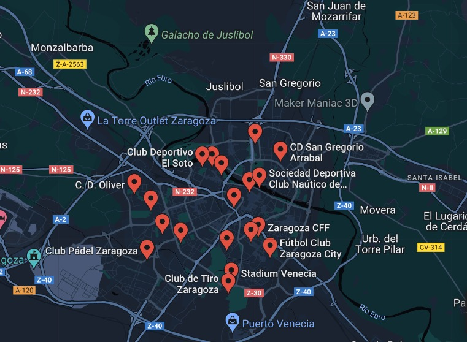

Deporte en Zaragoza

El Club Deportivo Socio-Cultural Militar “ El Soto” tiene como finalidad facilitar la práctica de actividades deportivas de los usuarios y actuar como núcleo para favorecer la acción social y cultural de estos y sus familias, fomentando las relaciones sociales y la Amistad.
El Club Deportivo Socio-Cultural Militar “ El Soto” tiene como finalidad facilitar la práctica de actividades deportivas de los usuarios y actuar como núcleo para favorecer la acción social y cultural de estos y sus familias, fomentando las relaciones sociales y la Amistad.